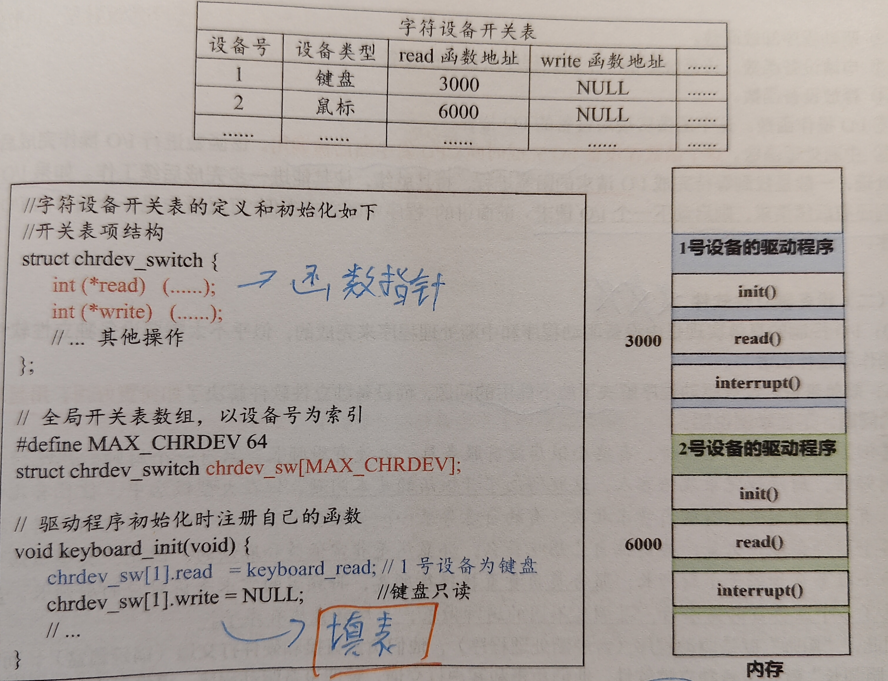

4.1 I/O管理
IO方式中，结合计组中IO方式硬件支持，以及操作系统中的IO方式软件层次结构，同时还有进程管理，中断机制，综合性较高。
重点 易错 易混
1. 本质
从操作系统的角度出发，管理I/O操作的执行流程。
2. 结构/组成
设备分类
- 字符设备： 类似鼠标键盘等，以字符为单位，不可寻址。
- 块设备： 以数据块为单位，可以寻址。常见有磁盘、光盘等。
- 虚拟设备： 采用假脱机技术，使物理设备变为多个逻辑设备。
设备控制器
又称IO接口，区别于IO端口（IO接口中的寄存器）。

- 区别控制寄存器（保存对外设的控制信息）和控制线（用来传输控制信号和中断信号等）。
- IO控制逻辑是大脑，实现设备控制功能。
- 将控制寄存器的信息译码为控制信号给外设
- 在数据缓冲寄存器和外设之间发送和接收数据
- 收集外设状态到状态寄存器中
- 编制方式
- 统一编制：外部设备（实际为IO接口中的各个寄存器）和内存统一编制。 优点：共用IO指令，保护机制，提高了编程的灵活性。 缺点：增加了译码的复杂度。同时减少了主存可用容量。
- 独立编制：x86处理器采用这种方式。需要专门的IO指令。 优点：降低了译码复杂度，寻址速度更快。同时程序更加清晰，有助于理解和检查。 缺点：降低了灵活性，同时需要专门的硬件保护机制。
IO通道
在CPU和设备控制器之间增加了通道（是一种硬件机制），目的是建立独立的IO操作。

- 区别所学的覆盖技术、交换技术、内存缓冲池技术、SPooling技术。
- 是一种特殊的处理机制，没有自己的内存，IO通道指令类型单一。
- 独立于CPU，执行对应的IO通道程序，当完成后，会向CPU发出中断信号。
IO控制方式：程序查询
- 独占查询：


|
|
- 该IO进程一直处于内核态，不会被阻塞。
- 定时查询：

可以避免轮询等待导致CPU的时间浪费。
IO控制方式：程序中断
当IO设备准备好后，会向CPU发出中断请求进行处理。
 示例过程：
示例过程：

|
|
这段代码的说明如下：也就是设备驱动程序。 ①把buffer缓冲区中的字符串复制到p指向的内核缓冲区中，通过P[i]访问不同字符。此时进程已经由用户态变为内核态。变为特殊的运行态。 ②打开中断，这样，CPU就能够处理中断。 ③轮询状态端口，判断打印机的当前状态是否空闲。如果不空闲，就一直循环等待。否则，就把循环变量i初始化为0，并把需要打印的P[0]放入数据端口中。注意，这里仅仅是把P[0]放入到数据寄存器中，然后就不管了。 ④接着，调用进程调度程序，切换到另一个进程B去执行，而自己则会被阻塞起来，并且挂到相应的阻塞队列中。 后续的字符处理则在中断处理程序当中，该中断处理程序依附于被中断的进程，而该进程已经被阻塞，当字符处理完后，由阻塞态变为就绪态。
|
|

IO 控制方式：DMA
用于对数据块的传输，外设可以和内存直接进行数据传输，信息传送不经过CPU。

- 注意DMA接口与主存之间的传送单位为字，而外设与DMA接口之间的传送单位为字节或位。
- 当外设准备好一个字后，会向DMA发送DMA请求；当传输完毕后，DMAC会向CPU发出中断请求，报告DMA结束。

- 传送方式：
- 停止CPU访存：控制较简单

- 交替访存：在每个存储周期内，二者都可以访存，但是增加了存储周期

- 周期挪用：会在每个机器周期结束时，进行传送

- 停止CPU访存：控制较简单
IO管理的软件层级结构
由以上的案例分析可知，操作系统下的软件层级结构：
|
|
案例分析
- 从用户软件开始
|
|
当执行main函数和scanf函数时，进程处于用户态；当执行到read系统调用时，发生了进程切换，变为内核态。
- 到设备独立性软件
|
|
为了找到对应的设备驱动程序，会为字符类设备设置一张字符设备开关表：

3. 设备驱动程序：与硬件直接相关，是设备的生产商提供。前面的程序查询方式实例可以看作是简单的驱动程序。运行时，位于操作系统的内核空间中，来指挥具体的外设工作： 将抽象要求变为具体要求 校验服务请求 检查设备状态 向外设传送必要的参数 启动IO设备 整个驱动程序中包含了中断处理函数：用于设备完成IO时，向CPU发中断后被调用。一般善后处理是将被阻塞IO进程变为就绪态。
整个驱动程序中包含了中断处理函数：用于设备完成IO时，向CPU发中断后被调用。一般善后处理是将被阻塞IO进程变为就绪态。
假脱机技术
采用第一章的思想，将外围机（卫星机）的控制功能用一道程序来进行模拟。
 从而：
从而：
- 提高了IO速度
- 将独占设备改造为共享设备
- 实现了虚拟设备功能
 当用户提交打印要求时，会将文件放入磁盘块，同时生成一张用户请求打印表，从用户角度而言，打印输出任务已经完成了。
但是真正的打印输出由假脱机打印进程负责，打印操作（没有外围机），同时对用户不可见。
当用户提交打印要求时，会将文件放入磁盘块，同时生成一张用户请求打印表，从用户角度而言，打印输出任务已经完成了。
但是真正的打印输出由假脱机打印进程负责，打印操作（没有外围机），同时对用户不可见。
SPOOLing技术：
- 输入/出井（对应磁盘缓冲区）：数据以文件的形式组织管理，即井文件。
- 输入/出缓冲区（位于内存中）
- 输入/出进程
- 井管理程序：用于控制作业和磁盘井之间的信息交换。

3. 核心操作
- 后续补充
4. 常考点
- 后续补充
5. 易错点
- 内核态不以独立进程形式存在
- 中断处理程序是操作系统内核中的一段程序代码，不是独立运行的进程，因此不建立 PCB。中断发生时，CPU保存当前进程现场后转去执行中断处理程序，中断结束后再恢复原进程执行。
- 中断例程依附于被中断的进程上下文。 进程A运行时发生中断：
|
|
- 中断处理只是临时借用CPU，执行内核代码。
- 中断例程结束时，会执行中断返回指令，但是不一定是被中断的进程（取决于调度程序）。
6. 关联知识
- 后续补充
7. 真题记录
- 后续补充